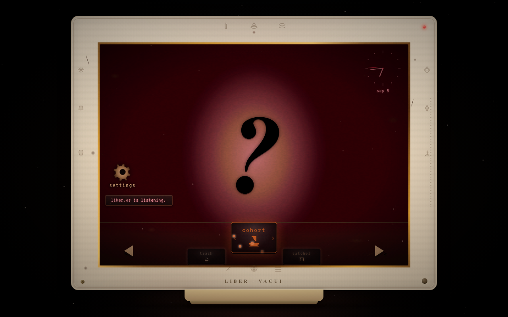
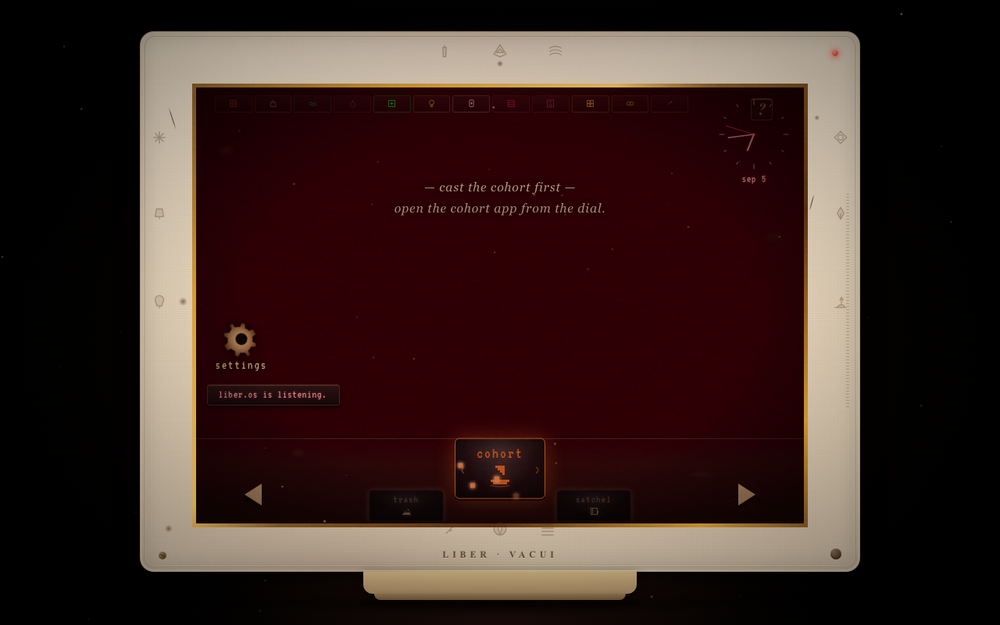

Visual Diff — Reference vs Build
Side-by-side comparison of the three reference sketches against the LiberVacui1.0 build.
Reference (user sketch)
Build (LiberVacui1.0)
State 1 — Boot
Black void, beige CRT, deep red screen, "LIBER.OS" + "[ start ]"

State 1 — Boot (Build)
LiberVacui1.0/screenshots/01-boot.png
State 3 — Pre-tutorial
Beige CRT, deep red screen, large flaming ? centered, dial at bottom

State 3 — Pre-tutorial (Build)
LiberVacui1.0/screenshots/03-pre-tutorial.png

State 4 — Post-tutorial
Beige CRT, deep red screen, ? top-left, sigil+artifacts+pink lines, dial at bottom

State 4 — Post-tutorial (Build)
LiberVacui1.0/screenshots/04-post-tutorial.png
